The Fellowship of the Ring
Маг Гэндальф приезжает в Шир. Бильбо планирует отметить своё 111-летие и 33-летие племянника Фродо. Более того, он
рад встрече со своим старым другом, во время которой жалуется магу на усталость.
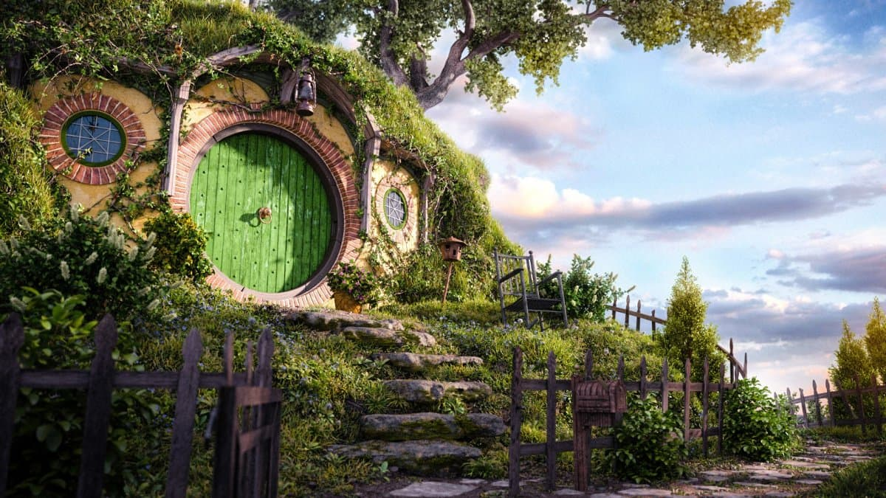
Вечером начинается праздник, во время
которого Бильбо рассказывает маленьким хоббитятам истории из своего путешествия, а Гэндальф наказывает неразлучных
друзей-хоббитов — Перегрина Тука и Мериадока Брендибака, самовольно запустивших фейерверк.
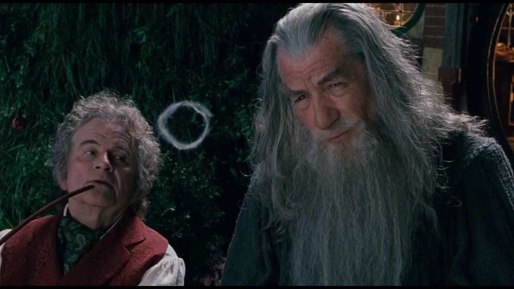
В разгар праздника Бильбо
произносит речь перед приглашёнными друзьями, а затем, надев Кольцо и став невидимкой, ускользает от них. Вернувшись домой,
хоббит обнаруживает Гэндальфа, который уговаривает Бильбо расстаться с Кольцом и передать его Фродо. Бильбо после разговора
с магом оставляет Кольцо Фродо и покидает Шир.
История кольца
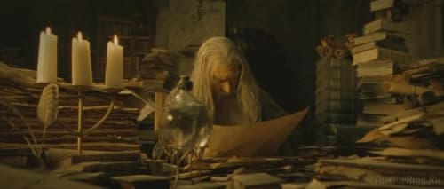
Гэндальф, который догадывается об истинной природе Кольца, отправляется в Гондор и находит документы Исильдура, который оставил Кольцо у себя, найдя в нём «неизъяснимую прелесть». Тем временем, Голлум под пытками в цитадели Саурона — Барад-Дуре — сознаётся, что Кольцо находится в Шире, и им владеет некий Бэггинс. Из крепости Минас-Моргул, на охоту за Кольцом выезжают Чёрные Всадники — назгул, и один из их допрашивает фермера Мэггота.
Гэндальф возвращается в Шир и опытным путём выясняет, действительно ли Фродо владеет Кольцом Всевластья. Увидев, что на Кольце появились эльфийские руны с заклятием самого Саурона на Чёрном Наречии, Гэндальф требует, чтобы Фродо отправился в Ривенделл, где эльфийский владыка Эльронд должен решить, что делать с Кольцом. Он направляет с ним садовника Сэма, подслушавшего их разговор во время выполнения своей работы. В поле фермера Мэггота они случайно встречают хоббитов Пиппина и Мерри, которые успели поживиться. Они едва не попадаются Чёрным Всадникам, но всё-таки успевают в последний момент бежать из Шира.
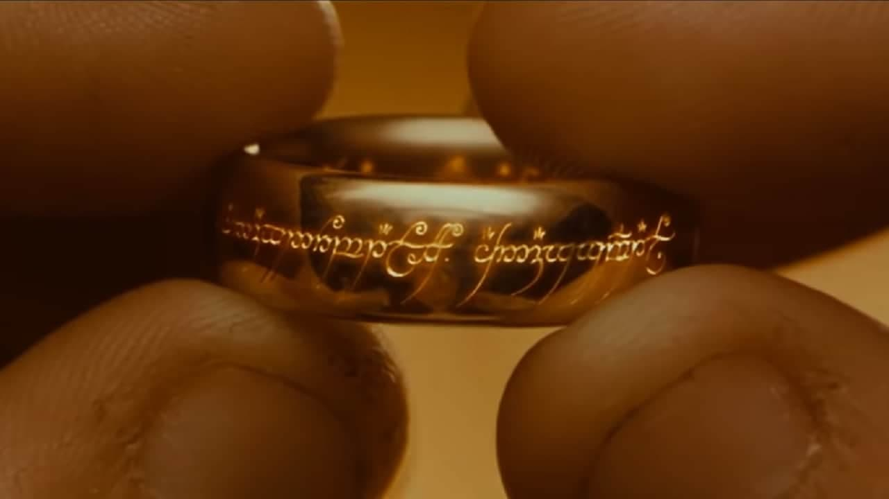
Следопыт
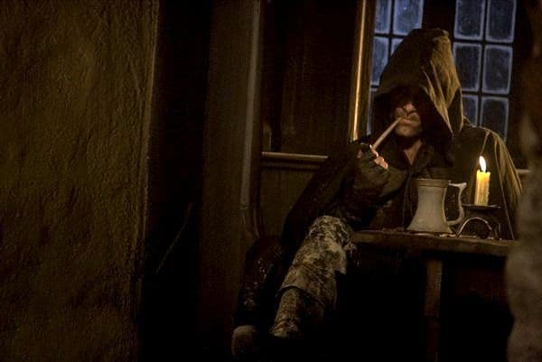
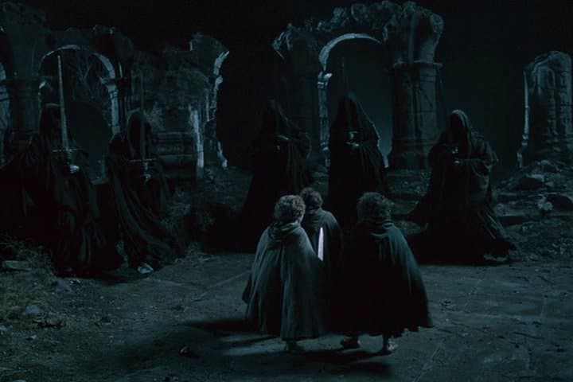
Хоббиты разбивают лагерь на горе Заветерь, при этом Арагорн уходит на разведку местности. Мерри и Пиппин по глупости разводят костёр, привлекающий внимание назгул, тотчас же атакующих хоббитов. Арагорн прогоняет врага, но главарь назгул, Король-Чародей Ангмара, успел тяжело ранить Фродо моргульским клинком. Приехавшая эльфийка Арвен на быстром коне доставляет Фродо в Ривенделл и топит преследующих её назгул в разбушевавшейся реке. Владыка Эльронд излечивает Фродо, и последний встречает в Ривенделле Гэндальфа, который сбежал из Изенгарда, а затем и Бильбо.
Судьба Фродо
Гэндальф видит то, как к Фродо возвращаются силы и он оправляется после нанесённой назгул раны (хотя она никогда не залечится полностью и будет тревожить до самой смерти), и сообщает Эльронду об планах Сарумана. Владыка Ривенделла говорит, что опасно оставлять Кольцо в его владениях, а чародей наблюдает за приходом в сам Ривенделл представителей людей, эльфов и гномов. Ночью Арагорн общается с Арвен, и влюблённые вспоминают то свидание, когда дочь Эльронда подарила Следопыту своё украшение.
На совете в Ривенделле, где выясняется, что Арагорн — это потомок и, следовательно, наследник Исилдура, Эльронд требует уничтожить Кольцо. Гэндальф заявляет, что его надо бросить в пламя Роковой горы в сердце Мордора. Шокированный сын наместника Гондора Боромир заявляет, что это невозможно: Мордор — бесплодная выжженная ядовитая пустыня, а его Чёрные Врата стерегут не только орки, там таится сильное зло, и Всевидящее Око Саурона на вершине Барад-Дура видит там всё. Фродо прекращает начавшуюся по вине эльфов и гномов перебранку, вызвавшись отнести Кольцо в Мордор. Фродо вызываются сопровождать его друзья-хоббиты, эльф Леголас из Лихолесья, маг Гэндальф, гном Гимли из королевства Эребор и люди — Боромир и Арагорн. Эльронд называет этот отряд Братством Кольца и провожает его участников в поход.
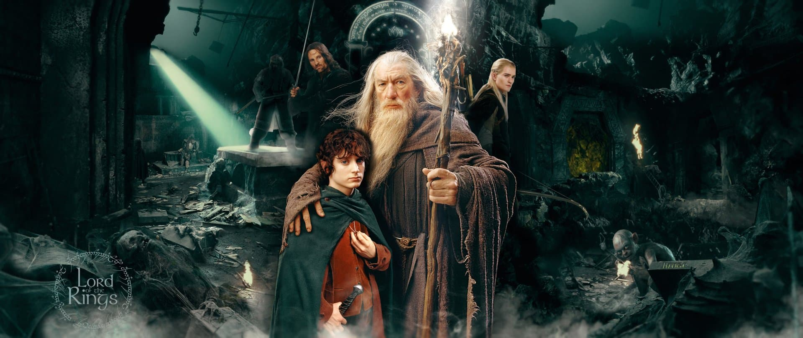
Братство Кольца
На подходе к Вратам Рохана Братство замечают вороны-шпионы Сарумана — кребайны из Дунланда.
Гэндальф ведёт отряд через снежный перевал Карадраса, но колдовство Сарумана провоцирует снежную
бурю, и тогда Фродо решает идти через древнее подземное королевство гномов Морию, хотя Гэндальф
знает, какое зло они породили в её глубинах в ходе поисков мифрила. Они заходят через Западные
ворота, но видят останки гномов, пробитые стрелами гоблинов — расчёт Гимли на гостеприимство гномов
не оправдался.
В этот момент из пруда вылезает чудовищный спрутообразный Глубинный Страж и хватает
Фродо, которого, однако, спасают его друзья, но силы неравны, и героям приходится отступить в Морию.
Фродо видит Голлума, который крадётся за ними. В глубинах Кхазад-Дума, они находят усыпальницу родственника
Гимли Балина, владыки Мории и спутника Торина Дубощита. Читая дневник Мазарбул, найденный в Чертоге, Гэндальф
понимает, что все гномы, принявшие участие в походе Балина, погибли.
Мория
Kоролевство гномов Мория
Пиппин случайно роняет скелет погибшего в экспедиции Балина соратника Торина гнома Ори в колодец, орки поднимают тревогу, герои вступают в отчаянный бой,
в ходе которого пещерный тролль безуспешно пытается убить Фродо (мифриловая кольчуга защитила его), и победив,
спешно отступают. Хранители снова оказываются окружены полчищами орков Мории, но все меняется с появлением нового
врага. Члены Братства добираются до Морийского моста, но тут их настигает чудовищный огненный демон древнего мира —
балрог (именно он распугал орков Мории своим рёвом). Гэндальф обрушивает мост с демоном в пропасть, но тот, обвив
мага своим кнутом, увлекает его за собой в бездну. Отряду, теперь возглавляемому Арагорном, удалось спастись, хотя
все оказались шокированы и деморализованы потерей Гэндальфа.
В глубинах Кхазад-Дума, они находят усыпальницу родственника Гимли Балина,
владыки Мории и спутника Торина Дубощита.
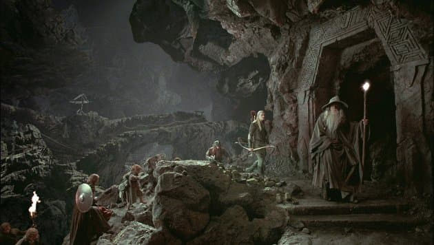
Читая дневник Мазарбул,
найденный в Чертоге, Гэндальф понимает, что все гномы, принявшие участие в
походе Балина, погибли. Пиппин случайно роняет скелет погибшего в экспедиции Балина
соратника Торина гнома Ори в колодец, орки поднимают тревогу, герои вступают в отчаянный бой,
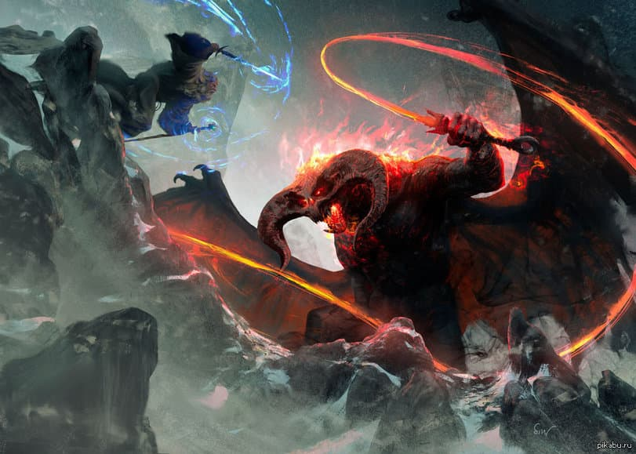
в ходе которого пещерный тролль безуспешно пытается убить Фродо (мифриловая кольчуга защитила его), и победив, спешно отступают.
Хранители снова оказываются окружены полчищами орков Мории, но все меняется с появлением нового врага. Члены Братства добираются до Морийского моста,
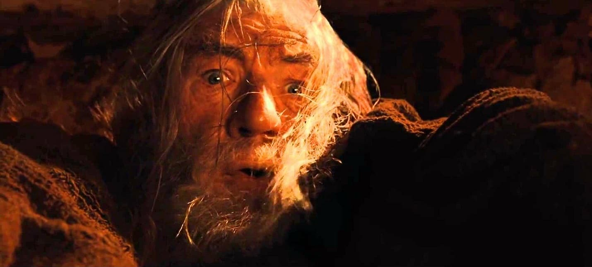
но тут их настигает чудовищный огненный демон древнего мира — балрог (именно он распугал орков Мории своим рёвом). Гэндальф обрушивает мост с демоном в пропасть,
но тот, обвив мага своим кнутом, увлекает его за собой в бездну.
Битва с Балрогом
Выйдя из пещер Мории, отряд приходит в леса Лотлориэна, где их задерживает патруль лесных эльфов-галадрим.
Арагорн просит командира Халдира отвести их к владычице Галадриэль, что и происходит. Герои останавливаются
на ночь в королевстве Лориэн.
Арагорн разговаривает с Боромиром про столицу Гондора, а Галадриэль показывает
Фродо своё волшебное зеркало. Фродо, после того, как око Саурона обнаружило его самого через Зеркало Галадриэли,
предлагает отдать кольцо эльфийской королеве, но та заявляет, что тогда вместо Чёрного Властелина у них будет Чёрная
владычица. Эльфы снабжают путников всем необходимым и отправляют их в лодках по реке Андуин. Саруман высылает на их
поиски отряд орков новосотворённого племени — урук-хай во главе с Луртцем.Герои во время путешествия по Андуину смотрят
на Столпы Аргоната, мимо которых они проплывают (Арагорн давно мечтал увидеть королей древности — свою родню) и
останавливаются на привал. На стоянке Боромир требует от Фродо отдать ему Кольцо, чтобы спасти его народ. Фродо
отказывается.
Галадриэль
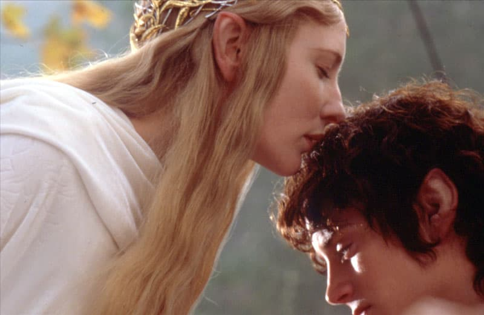
Выйдя из пещер Мории, отряд приходит в леса Лотлориэна,
где их задерживает патруль лесных эльфов-галадрим. Арагорн
просит командира Халдира отвести их к владычице Галадриэль,
что и происходит. Герои останавливаются на ночь в королевстве Лориэн.
Эльфы снабжают путников всем необходимым и отправляют их в лодках по реке Андуин.
Столпы Аргоната
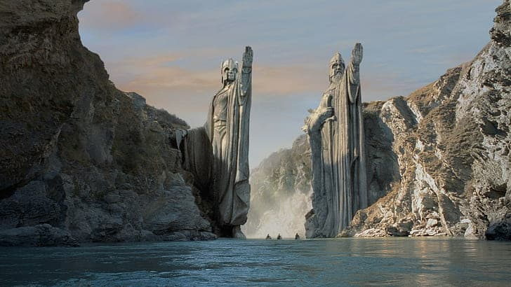
Узнайте историю столпов Аргоната
Истрия столпов Аргоната
Фигуры были изготовлены примерно в 1240 году Третьей Эпохи
по приказу короля Ромендакиля II, чтобы обозначить северную
границу Гондора, хотя ко времени прохода Аргоната Братством
Кольца 25 февраля 3019 года Третьей Эпохи Гондор сильно
уменьшился в размерах.
Смерть Боромира
Боромир пытается отнять Кольцо силой, но Фродо, надев Кольцо и став
невидимым, ускользает от него. Хоббит садится во всевидящее кресло Амон
Хен и видит око Саурона.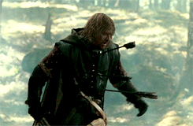 Он снимает Кольцо и рассказывает Арагорну про
зарвавшегося Боромира.Но внезапно появляется крупный отряд орков. Арагорн
вступает с ними в бой, а Фродо успевает сбежать. Гимли и Леголас успевают
на помощь Арагорну и слышат рог Боромира. 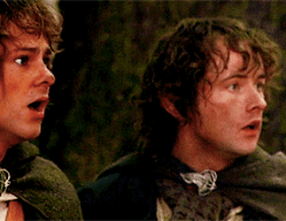Оказывается, Мерри и Пиппин,
подвергая себя опасности, отвлекли орков от Фродо, и им на помощь пришёл
Боромир, а трубя в свой рог, он выдал свое месторасположение всему
вражескому отряду и в итоге оказался на острие жестокой атаки превосходящего
числом врага.В неравной битве, на глазах у хоббитов, Боромир уничтожает
многих орков, но их командир Луртц расстреливает витязя из лука, а Урук-хай
захватывают Пиппина и Мерри, после чего отступают.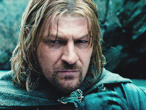 Луртц остаётся добить
Боромира контрольным выстрелом из лука, тот уже был готов с честью принять
смерть воина, но внезапно на Луртца нападает Арагорн и не даёт ему добить
Боромира.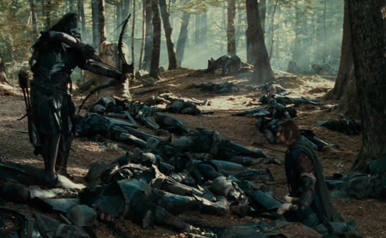 Луртц бьется с Арагорном в тяжёлом поединке, но в результате
погибает, лишившись сначала правой руки, а потом и головы.Боромир
рассказывает Арагорну о своей тщетной попытке забрать Кольцо у Фродо и
раскаивается в своем поступке.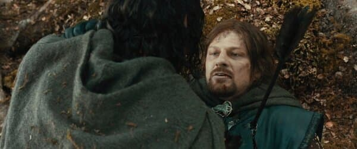Арагорн говорит, что Кольцо более недосягаемо
и пытается помочь Боромиру, но тот отказывается. Затем Боромир признаёт
Арагорна своим государем и испускает дух.
Боромир